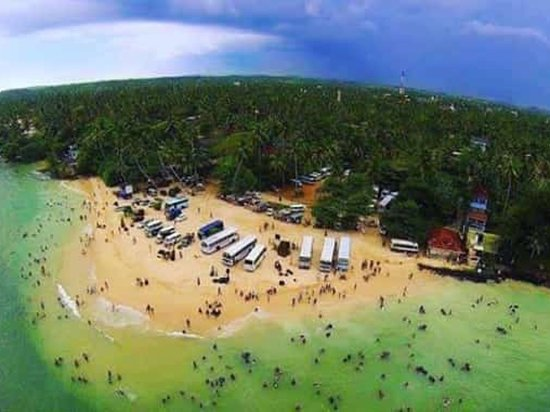

Matara offers a combination of historical, religious, cultural and natural attractions. Visitors can explore heritage sites, beaches, temples and beautiful coastal landscapes.

Matara Fort
Matara Fort is one of the most famous historical attractions in the city. It is located near the coast and provides an opportunity to experience the colonial history of Matara.

Star Fort
Star Fort is a unique historical structure with a star-shaped design. It was built for defence and is now an important heritage attraction.

Matara Bodhiya
Matara Bodhiya is an important Buddhist religious site. It attracts many devotees and visitors throughout the year.

Coconut Tree Hill
Coconut Tree Hill is a iconic red-cliff promontory located in Mirissa, famous for its dense grove of tall coconut palm trees extending towards the ocean. It is one of the most popular photography and sunset spots along the southern coast, offering sweeping views of Mirissa Bay and the surrounding coastline.

Blue Beach Island
Blue Beach Island is a unique private island connected to the mainland near Dikwella/Nilwella by a sandbar during low tide. It offers a scenic environment that is particularly famous for camping, snorkeling, and night beach fires.

Polhena Beach
Polhena Beach is a popular recreational destination in Matara. It is known for its attractive coastal environment and calm waters.

Paravi Duwa Temple
Paravi Duwa is a small island temple located near Matara. The temple provides a unique combination of religious and coastal scenery.

Dondra Lighthouse
Dondra Lighthouse is located near the southernmost area of Sri Lanka. It is an important landmark and a popular attraction because of its coastal setting.

Weherahena Temple
Weherahena Temple is a famous Buddhist religious site in the Matara area. It is known for its large Buddha statue and underground temple complex.

Hiriketiya Beach
Hiriketiya Beach is a horseshoe-shaped bay renowned for its picturesque scenery and surf spots. Surrounded by coconut palms, trendy cafes, and resturants,it is a favored location for both surfing enthusiasts and travelers seeking a relaxed coastal atmosphere.

Old Nupe Market
Old Nupe Market is a historic building that reflects the commercial and architectural heritage of Matara